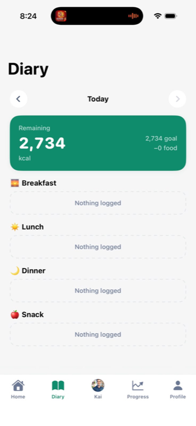
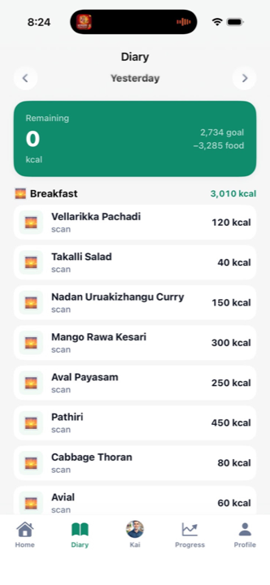
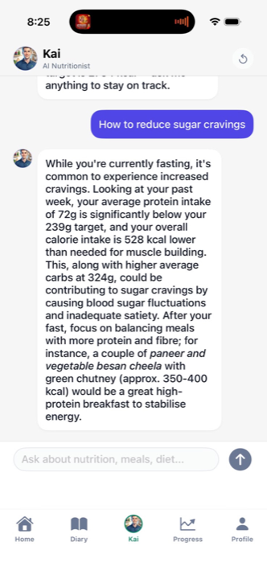
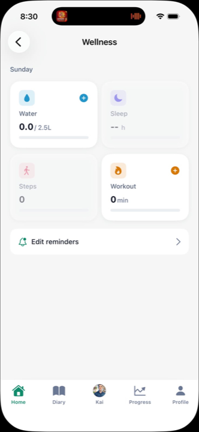

CaloriSync turns 7 days of meals into one report you can't argue with. See the gap between what you think you ate and what your body got. Then close it — with Kai, your AI coach who doesn't flatter you.

That's the gap between the body you think you're feeding and the body you're actually building. Over a year it adds up to numbers nobody wants to see.
You don't have a willpower problem. You have a measurement problem. CaloriSync fixes the second one.
Source: Schoeller et al., American Journal of Clinical Nutrition (doubly-labeled water studies).
Every excuse you used to quit calorie tracking last time — engineered out.
One photo. The dish, the portion, the kcal. Even thali, biryani, and rotis — in seconds.
Kai reads your actual week and tells you what's working, what isn't, and what to fix tomorrow. Without the wellness fluff.
PCOS, type 2 diabetes, hypothyroid, high BP, fatty liver, allergies, fasting days — Kai factors them in every plan, not as an afterthought.
Track the way you actually eat — not by hunting down "120g cooked masoor dal." The math runs in the background.
Apple Health sync means your treadmill, your weighing scale, and your plate finally tell the same story.
Seven days. One screen. The streak, the slip, the protein gap. You'll change behaviour just to make next week's report look better.
No motivational quotes. No vague advice. Just your real week, laid out flat.

Pathiri, aval payasam, mango rawa kesari — logged from a single photo. The "I'll log it later" excuse is over.

Asks what you'd ask a strict friend, gets the answer your week actually deserves. Grounded in your data, not generic advice.

Did you keep your word to yourself this week? The report doesn't negotiate. The 7-day chart settles it.
One week. Three checkpoints. By Sunday, you'll know things about yourself you didn't.
Scan one meal. See what it actually costs. The first surprise lands today.
Kai points out what you didn't notice — the 4pm slip, the protein you never hit, the day that broke the week.
One screen. Your honest week. The kind of report that quietly changes how you eat next week.
And the four small things we changed so this time it doesn't.
Now: Scan a plate or search by katori. Under 5 seconds per meal. Faster than typing "rice" into a search box.
Now: Kai reads your actual week and replies to your actual goals. No copy-paste wellness scripts.
Now: 50+ Indian dishes pre-seeded from the IFCT‑2017 database. Roti is roti. Katori is katori.
Now: We show you the week, not the day. Less noise. More signal. Better behaviour.
Seven days free. Cancel from your iPhone Settings if it doesn't change how you eat. We don't see your card.
7 days free, then auto-renews
Less than ₹6 / day. About two cutting chais.
Subscriptions are managed by Apple. Cancel any time from your iPhone Settings.
One missed day doesn't break the challenge. Kai resets you on Day 1 the moment you log again, and your streak picks back up. The goal is honesty, not perfection.
Yes. Your food logs and health data live on encrypted servers in India. We don't sell your data. We don't run ads. You can export or delete everything in two taps from the app's Privacy settings.
Those were built for someone else's plate. CaloriSync was built for yours — IFCT‑2017 food database, Indian portion sizes (katori, roti, plate, glass), condition-aware coaching for PCOS / diabetes / fasting, and Kai, an AI coach that reads your week and replies to your goals. Not a generic wellness script.
No. Kai is an AI coach that gives general dietary suggestions. It's not medical advice. If you have a medical condition, allergies, or are pregnant, please consult a qualified doctor or registered dietitian before changing your diet.
Your trial auto-renews into a paid subscription at ₹199/month or ₹1,999/year — whichever you picked. If you cancel from Settings → Apple ID → Subscriptions before day 7, you're never charged.
Yes — we're working on it. iPhone first, because Apple Health integration goes deeper there. Drop your email at support@calorisync.com and we'll tell you the day it ships.
Logging meals you've eaten before and viewing your history works offline. AI scanning and Kai chat need internet because they run on cloud-hosted AI models.
Encrypted servers in India. AI scans and Kai messages are processed through enterprise AI partners (currently Google Gemini) under a Data Processing Agreement — your prompts are not used to train their foundation models.
Take the challenge. If the data doesn't change how you eat, cancel in two taps. The only thing you stand to lose is the guesswork.